hypercells — documentation
hypercells is a GPU simulation of a swarm that draws itself. Hundreds of thousands of particles each sense a faint velocity field left behind by their neighbours, pass those two readings through a small Fourier rule, and steer. What they deposit is the field they read: the artwork is the flock's own memory.
This document explains the loop, the autopilot that steers the swarm through parameter space on its own, and every control in the panel — what it does in the maths, and which other controls it fights or reinforces.
autopilot-4k.html at 3840×2160: the
field is the window, every particle is one pixel. Captured from the recordings in
recordings/.1 · Overview
There is no drawing and no physics engine. There are two textures and a handful of fragment shaders, run twice per displayed frame:
- the entity texture holds one particle per texel — position in
xy, velocity inzw. At the default world size that is 600 000 texels; the 4K build runs 1 000 000, and the largest setting 2 000 000. - the field is a square or screen-shaped texture the same resolution as the output canvas. It is what particles write (a soft dot of their velocity) and what they read (two samples, left and right of their heading).
Each step, every particle reads the field at two points, turns the pair of readings into a force and a sideways push through its cohort's rule, and moves. The dot it leaves behind is the only thing that makes its behaviour visible, and it is also the only thing that steers its neighbours.
autopilot.html is the reference build:
1024-texel square field, letterboxed, 600 000 particles, soft sprites.
autopilot-4k.html is the same engine with seven settings changed — 2160-texel
full-screen field, 1M particles, hard single-pixel sprites. They differ by a header of
constants, nothing else; see Performance.
2 · The simulation loop
Life of one step
Two steps run per animation frame, always exactly two, never more. (Even numbers matter: with negative drag a single step can overshoot and the pair corrects it.) The order is fixed, and the order is the mechanism — the field a particle senses is the one its neighbours wrote in the previous step.
Sense and steer
This is the part that decides everything the swarm looks like. A particle has a heading
(its velocity, normalised). It samples the field at two points placed
sensor dist ahead of it, swung ±sensor angle off the
heading. The two readings are multiplied by sensor gain and fed to its
cohort's Fourier rule, which returns a force and a sideways push.
sensor dist is compared to the deposit
size rather than to the canvas — see R — because a sensor closer than
one deposit radius reads its own trail and the particle stalls.Two memories
Two controls are called "persistence" in spirit and they do entirely different things. This is the most common source of confusion in the panel.
the field's persistence
Physics sectionHow much of last step's field survives into this one. It is the steering memory:
raise it and the swarm follows trails laid many steps ago, so it moves more slowly and
coherently and carves longer filaments. Value in the panel is clamped to
0.95 … 0.998; the deposit strength is coupled to it as
1 − persistence, so a longer memory deposits less per step to compensate.
accumulation
Render sectionHow much of the displayed image survives. It is long exposure, not
physics: 0 shows only the live frame, 1 never clears, so every
mark stays where it was painted and the canvas fills into a permanent painting. It cannot
change how the swarm moves — only what you see of where it has been.
accumulation → 1.Rules and cohorts
A "rule" is ten four-dimensional Fourier centres: the small function that maps the two sensor readings to a force. Ten centres, four components each, is 80 floats — the entire behaviour of one organism.
cohorts splits the swarm into that many groups, each running its own
rule, taken from the base rule by a stable mutation seeded with seed + cohort index.
The rules are computed on the CPU and uploaded as a 24×20 float texture; the shader looks its
own column up with texelFetch. Twelve cohorts therefore means twelve variants of
one organism sharing a field — they compete for the same trails, which is where the fine
multi-coloured texture in the captures comes from.
3 · The autopilot
The swarm is not steered by hand in this build. The autopilot walks it through parameter space: it picks a destination, glides there slowly, holds, watches what happens, and decides where to go next. It is on by default; a toggles it and any slider you touch removes itself from its control.
Hold and morph
Two phases alternate. In hold nothing changes and the swarm is allowed to settle —
trails build, the field reaches equilibrium. Then morph glides every unlocked parameter
towards the destination over morph time, with a smootherstep easing so the ends
of the glide are gentle.
morph time 5–180 s, hold time
5–120 s. Long holds are what let the field settle into the shapes in the captures; short
holds make the piece a slideshow of states that never quite form.Candidates
At the end of a hold the autopilot chooses a destination by exploration:
| Draw | Destination | Effect |
|---|---|---|
| 1 − exploration | a real anchor | One of the seventeen configurations the project was tuned on (the entries in
config/configs.js plus the three presets). A reliable, known-good look. |
| exploration | a generated candidate | Two or three anchors are picked, blended in encoded parameter space, nudged with Gaussian noise, then projected back into the good band. New territory near known territory. |
| one in eight | the other family | Family A (sensor gain below 2.2) and family B are qualitatively different animals — low-gain drifting versus high-gain nervous systems. Occasionally the autopilot crosses between them on purpose. |
By default the destination is a known-good state. exploration at 1 means every
destination is invented, which is where the piece finds its more unusual frames — and where it
occasionally finds a dead one, which is what the health monitor is for.
Metrics and the good band
Every configuration, anchor or generated, is summarised by three derived numbers. They are the autopilot's notion of "what kind of organism is this", and they are what the good band is built from:
| Symbol | Formula | Reads as |
|---|---|---|
| G | sensor gain | how loudly the swarm hears its own field |
| V | |force| ÷ (1 − |drag|) | terminal speed the swarm wants to reach |
| P | G × V | overall drive — gain times speed |
| R | sensor dist ÷ 0.163 | sensor reach, measured in deposit radii |
R is the important one. Below about 1 the sensors sit inside the deposit a single
neighbour makes, so they read their own trail: particles glue to their own marks, the field
goes static, and the health monitor calls it dead. That is why sensor dist and
the deposit size — which is fixed at σ 0.163 texels and only changes with the field
resolution — have to be understood together.
R is clamped
directly, and sensor gain is then recomputed so that P lands inside
too. The bands are wide because the anchors disagree — that is the point.The health monitor
The field itself is read back to the CPU every 30 steps (32 × 32 box-averaged, through a pixel buffer so it never stalls the GPU) and reduced to two numbers:
- mean — the average magnitude of the field. Its running reference decays slowly, so the monitor compares the field to what this configuration was recently doing.
- fizz — how much the field changed since the last read, divided by its own mean. A calm field has low fizz; a boiling one has high fizz.
Guards and limits
The autopilot and the physics are both fenced in. These limits are the difference between a piece that can be left running for hours and one that collapses after ten minutes:
| Guard | Value | Why |
|---|---|---|
| speed cap | 3 texels/step | With drag → 1 the terminal speed is unbounded. The cap is what drag actually multiplies against. |
| force range | −0.5 … +0.5 | Keeps P inside the band and stops a morph from spiking the swarm. |
| force never zero | ≤ 1.0 s | Zero force means the particles stop steering and the field goes dead, so in auto mode a glide may only pass through zero. A sign-changing glide holds its magnitude at 0.05 and flips once; a backstop re-asserts after a second. |
| persistence clamp | 0.95 … 0.998 | Below 0.95 the field decays faster than it is written and nothing accumulates; above 0.998 it never forgets and the trails set solid. |
| drag | 0 … 0.95 | Negative drag is off by default — it makes the swarm accelerate on every step and is only interesting in small doses. |
| rule slew | 3.0 /s | Force-space floats are glided at a bounded rate so a rule morph cannot jump a cohort into a different organism between two steps. |
| parameter slew | 0.7–1.6 /s | Per second in encoded space; sensor gain glides slower above 2.0, where it is more sensitive. |
4 · Colour
Colour is per cohort, not per particle, and it moves. The hue of a cohort comes from its index spread by the golden angle — so any number of cohorts lands evenly round the circle and two cohorts never collide on the same colour — plus a little hash so the spread is not mechanical.
Vividness is deliberately two-tier, and that is the whole of the palette design:
| Tier | Which cohorts | Saturation | Value |
|---|---|---|---|
| accent | every other one (0, 2, 4 …) | 0.86 | 1.00 |
| muted | the ones between (1, 3, 5 …) | 0.50 | 0.88 |
So a twelve-cohort swarm is six saturated accents over six quiet groups rather than twelve competing neon hues. The muted tier is deliberately not dark: 0.50 saturation keeps it clearly a colour rather than grey, and 0.88 value keeps the darkest channel at 112 of 255, well clear of mud. Raising the muted value further just makes it bright again; lowering the saturation turns it grey.
Two further rules keep the colour coherent over time:
- Every particle in a cohort is exactly the same hue, always. Particles change colour over time because their cohort's hue moves — not because they drift apart.
- The wobble is per cohort by phase, not per particle. An earlier per-particle version of this spread the hues inside each cohort and produced colour speckle; here a particle can never leave its cohort's hue by more than the wobble amplitude.
All cohorts drift round the palette at one shared rate, so their relationships are fixed and cannot desynchronise. The clock is the simulation step count, so colour is reproducible from the seed and freezes when the piece is paused.
5 · Settings reference
Every control in the panel. Ranges are the ones enforced by the slider and by the code underneath it; "auto" marks the parameters the autopilot glides when they are not locked.
Autopilot
| Control | Range | What it does |
|---|---|---|
| autopilot | on / off | Master switch. Off leaves the swarm on its current settings and the panel entirely manual. |
| clear locks | — | Releases every locked slider back to the autopilot. Dragging any slider locks it, and clicking its label toggles the lock. |
| morph time | 5 … 180 s | How long a glide takes. Longer is smoother and shows the transition as part of the work; shorter makes it a cut. Bounded below by the slew limits, so 5 s and 20 s can look the same on a big jump. |
| hold time | 5 … 120 s | How long each state is left alone before the next move. This is the pacing of the piece, and it is also how long the field gets to form structure. |
| exploration | 0 … 1 | Probability that the next destination is generated rather than a known anchor. 0 = always safe and familiar, 1 = always invented. Interactions below. |
| seed | integer | Seeds the whole show: the order of destinations, the generated candidates, the reset positions. The same seed and the same panel settings replay the same piece. |
Physics
| Control | Range | What it does | Auto |
|---|---|---|---|
| sensor angle | −1 … 1 (±180°) |
How far off the heading the two sensors are swung. Small angles look almost straight ahead: the particle follows the trail it is on and you get long, smooth filaments. Large angles look sideways and the swarm curls into spirals and loops. Near ±90° it is reading across its own path, which is the most unstable regime. | yes |
| sensor dist | −2 … 3.5 | How far ahead the sensors are placed. Compared to the deposit size this is R: large values make the swarm plan ahead and move in long straight runs, and values near zero make it read its own mark. Negative values put the sensors behind the particle, which makes it reverse into its own trail. | yes |
| sensor gain | 0 … 10 (clamp 12) |
Multiplies the two sensor readings before the rule — the swarm's sensitivity. Low gain is sluggish drifting (family A); high gain is a nervous, fast, high-contrast network (family B). This is the single most structural control in the panel and the one the family split is defined by. | yes |
| force | −0.5 … 0.5 | Global multiplier on the force the rule returns. Sign flips the swarm's handedness. Together with gain it sets P, and it is bounded because P is what keeps a state inside the good band. | yes |
| drag | 0 … 0.95 | Velocity retained per step. Near 0 the particle forgets where it was going and the field is pure reaction; near 1 velocity accumulates and the swarm streams. Terminal speed goes as 1 ÷ (1 − drag), which is why drag and force are felt together and why the speed cap exists. | yes |
| mutation | 0 … 1 | How far each cohort's rule is mutated from the base rule. At 0 all twelve cohorts are one organism; raised, they diverge into competing variants — which is what produces the layered, multi-hued texture. Too high and the rule stops being a behaviour. | yes |
| hazard | 0 … 0.05 | Per-step chance that any single particle is teleported to a random position with zero velocity. A tiny value keeps a few fresh particles seeding new trails in an otherwise settled field; anything larger shreds the structure. | yes |
| persistence | 0.95 … 0.998 | The field's memory — see Two memories. Higher means the swarm steers by older trails: slower, more coherent, longer filaments. The per-step deposit scales as 1 − persistence, so raising it does not simply brighten the field. | yes |
Not in the panel, but real physics: axial,
lateral and strafe scale the rule's output along and across the
heading, and diffusion blurs the trail before it is read. All four are glided by
the autopilot and are carried in the copy-state link, but they have no slider in this build.
Organism and world
| Control | Range | What it does |
|---|---|---|
| cohorts | 1 … 24 | How many distinct rules share the field. One cohort is a single organism, twelve is a competing population. This is the main lever on visual texture, and it interacts with mutation (how much the cohorts differ). |
| world size | tiny … large | Scales the whole simulation together: the particle count, the field resolution, and the deposit size. In autopilot.html that is 48 k/150 k/300 k/600 k particles on a 290/512/724/1024-texel field. Lower is smoother and cheaper; higher is denser and finer. In the 4K build this control changes the particle count only — see below. |
Render
| Control | Range | What it does |
|---|---|---|
| brightness | 0.2 … 3 | Multiplies the sprite colour before accumulation. Because accumulation piles frames up, this is the control that keeps a high-accumulation image from blowing out. |
| accumulation | 0 … 1 | Long exposure — see Two memories. 0 = live frame only, 1 = nothing is ever cleared. |
| hue drift | 0 … 0.01 cycles/s |
How fast the palette as a whole travels. Shared by every cohort, so the swarm's colour relationships are constant and impossible to desynchronise. |
| hue wobble | 0 … 0.05 | How far each cohort breathes around its own hue, on its own phase. 0 gives crisp single-hue cohorts; the maximum gives a slow, soft shimmer between them. |
| particle size | soft, 1 … 4 px | Sprite extent in field texels. soft is the original gaussian dot (1.152 texels across). 1 px is one field texel snapped to the texel grid, which is exact and never flickers; larger values are soft dots of that nominal size. Size is in texels, not on screen, so it appears to shrink as the field resolution rises. |
Buttons and keys
| Control | Key | What it does |
|---|---|---|
| pause | space | Stops stepping. The accumulated image is not advanced while paused, so the exposure stops too. |
| reset | r | Re-scatters the particles on a ring and clears the field and the accumulation. |
| new | n | A brand-new organism: a fresh random rule and seed, then a reset. |
| mutate | m | A gentle nudge of the current rule, glided through the same slewing path the autopilot uses rather than jumped. |
| view | f | Switches between the particles and the field view — the field view paints the trail field's own velocities as colour, which is the only thing that reads the paint layer. |
| panel / hud | h | Shows or hides the panel and the status line. The page starts hidden: press h to see anything. |
6 · How the settings interact
Almost every control in the panel is really a pair. These are the couplings that matter, in rough order of how often they surprise people.
| Pair | Coupling |
|---|---|
| sensor gain × force | Both multiply the two sensor readings into the same force, so they are the same
control twice: P = gain × |force| ÷ (1 − drag). Raising one and lowering the
other keeps the drive but changes the character: gain shapes how strongly the
rule responds, force scales what the rule returned. |
| drag × force | Drag is a divisor on speed. At drag 0.7 the terminal speed is
force ÷ 0.3; at 0.9 it is force ÷ 0.1. The last
tenth of the drag slider is worth more than the whole first half, and the speed cap
(3 texels/step) is what eventually stops it mattering. |
| sensor dist × deposit size | The deposit is fixed at σ 0.163 texels. Sensing closer than about one deposit radius
(R < 1) means reading your own trail, which is the standard way to make a
configuration die. Filtering the anchors by R is what the good band's
Rmin is for. |
| persistence × sensor gain | A longer field memory means stronger, longer-lived trails, so the swarm is
effectively more sensitive at the same gain. Raising persistence is a rough substitute
for raising gain — with the difference that it also slows everything down and smooths
it. The deposit is scaled by 1 − persistence, which cancels the first-order
brightness effect but not the steering coupling. |
| persistence × accumulation | Different memories. Persistence changes what the swarm does; accumulation changes what you see it did. If a change to persistence does not look like much, it may be because accumulation is smearing over it. |
| accumulation × brightness | Kept frames pile up, so displayed brightness approaches
value ÷ (1 − accumulation). High accumulation and high brightness is the
classic blow-out; the intended pairing is more exposure, less brightness. |
| hazard × everything | A hazard respawn is a hard reset of that particle — position and velocity both gone. Small values seed new trails inside a settled field; larger values erase the coherence the other controls are building and read as noise. |
| cohorts × mutation | Cohorts set how many rules, mutation sets how different. One cohort makes mutation irrelevant. Twelve cohorts at mutation 0 are twelve identical organisms (visually one). Twelve at high mutation are twelve behaviours competing for the same field. |
| mutation × seed | Cohort rules are seeded with seed + cohort index, so changing the seed
changes the whole population's variation, not just the destination order. Two runs at the
same settings and different seeds are the same piece on a different cast. |
| world size × particle size | Particle size is in field texels and the field grows with world size, so the same
setting looks smaller on a bigger world. In autopilot.html, raising world
size also raises the field resolution and therefore the deposit's texel size relative to
the canvas. |
| exploration × hold time | Generated candidates are noise-perturbed, so some are duds. A long hold with high exploration is a long wait on a possibly-dead state — which is exactly what the health monitor is there to cut short. |
| morph time × slew limits | The slew limits are caps, not targets. On a large jump, a 10 s morph and a 30 s morph can traverse the same path at the same speed because the limiter, not the clock, is deciding. |
| hold time × health | A struggling configuration slows the autopilot's clock (up to 6×), which stretches both the hold and the morph. A low hold time does not guarantee a fast pace if the swarm is unhappy. |
| locks × everything | Any slider you touch is taken out of the autopilot's control and keeps its value through every morph. This is how you steer the piece by hand while it continues to run itself. |
7 · The interface
The page opens with the panel hidden — the piece is the full window. h reveals the panel and the status line. The status line reports the seed, the autopilot's current phase and destination, the fizz index, and how many sliders are locked.
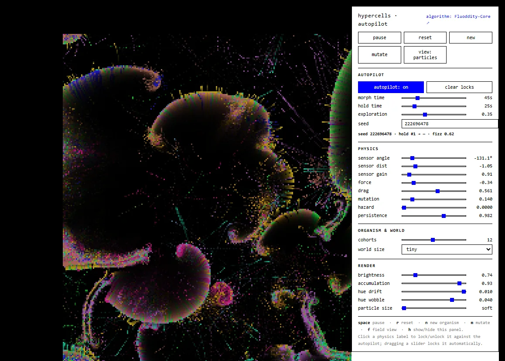
8 · Captures
Frames taken from the screen recordings in recordings/, cropped to the artwork
rectangle and nothing else — no browser chrome, no panel. Click any frame for the full-size
version. The first four sets are the letterboxed build at 1536²; the last is the 4K build
full bleed.
Recording 1 — high gain, twelve cohorts
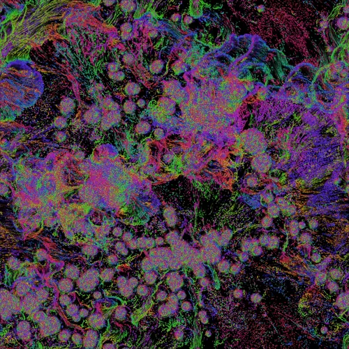
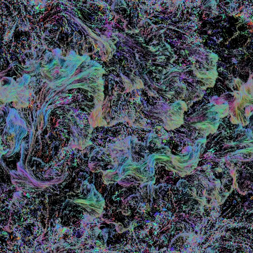
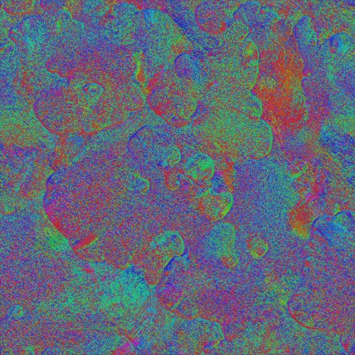
Recording 2 — long trails
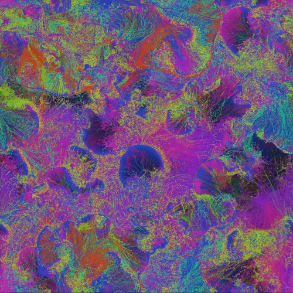
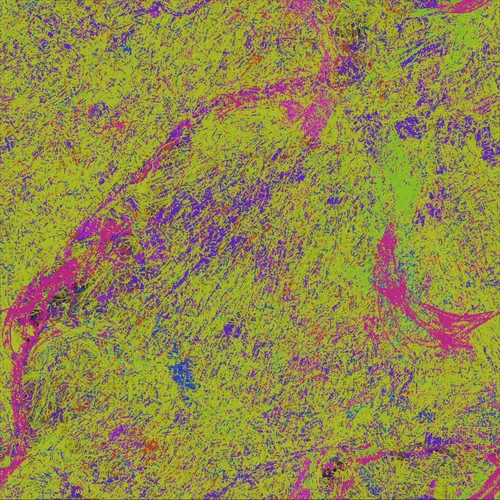
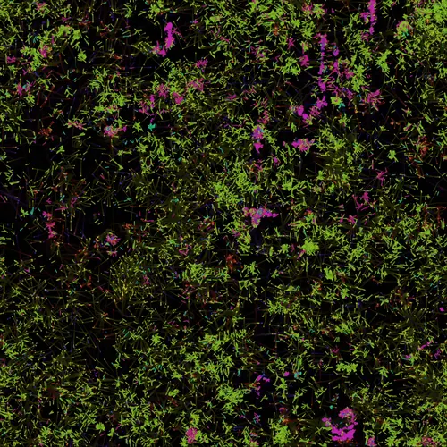
Recording 3 — organic branch
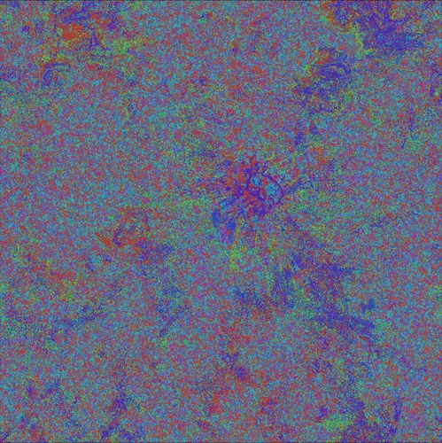
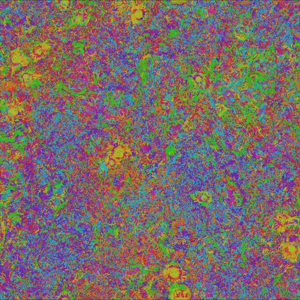
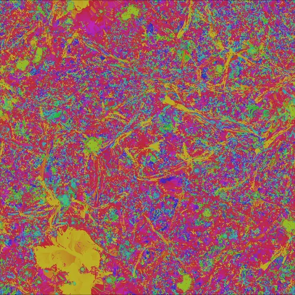
Recording 4 — settled and dense
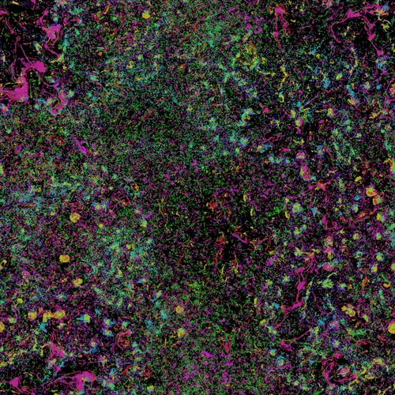
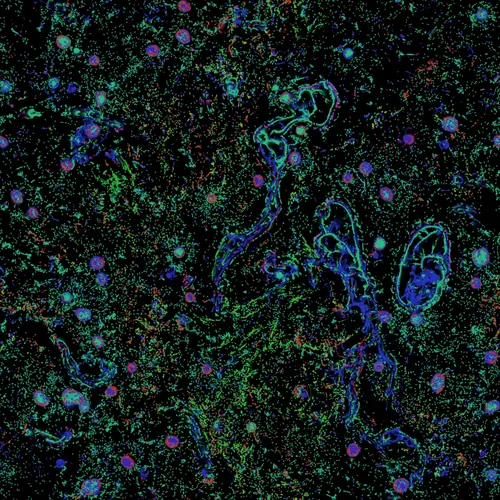
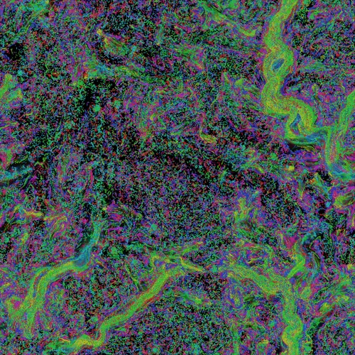
Recording 5 — the 4K build, full bleed
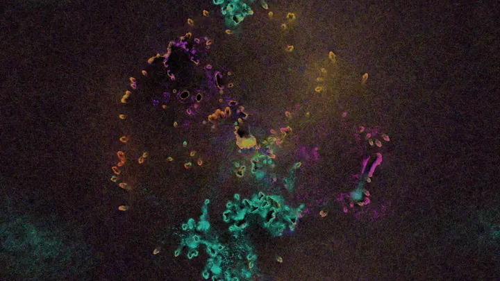
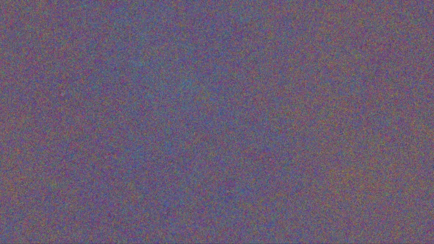
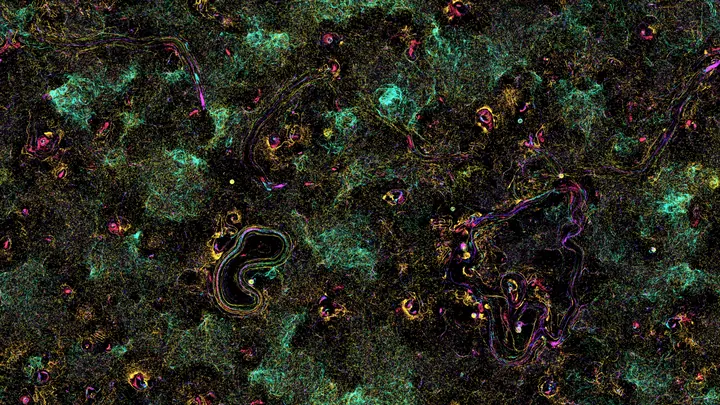
9 · Performance and the 4K build
The cost of this simulation is the field, not the particles. The field is the size of the output canvas, and every field pass touches all of it: at 3840 × 2160 each field-sized RGBA32F texture is 127 MB, and the trail pass reads six texels and writes one for every one of its 8.3 million texels. A million single-pixel sprites, by comparison, are almost free.
That is why the 4K build's world-size control is a density knob rather than a resolution knob: the field stays at 2160p so the output stays a crisp 1:1, and only the particle count moves (0.5M / 1M / 2M). Because a fixed field with more particles would otherwise be written harder, the deposit is scaled by the particle count so all three settings sit at the strength the configurations were tuned at.
| Setting | autopilot.html | autopilot-4k.html |
|---|---|---|
| field height at world size 1 | 1024 | 2160 |
| particles at world size 1 | 600 000 | 1 000 000 |
| framing | square, letterboxed | fills the window (16:9 field) |
| world size control | particles + resolution together | particles only: 0.5M / 1M / 2M |
| particle size | soft gaussian, 1.152 texels | 1 hard texel, grid-snapped |
| deposit | proportional to particle count | normalised, so settings look alike |
| texture memory | ≈ 150 MB | ≈ 1.0 GB |
autopilot-4k.html lists them. Every feature in this
document, including the autopilot and the good band, is identical in both.
Where the remaining cost is
- Full bleed is itself the biggest expense. A 16:9 field has 1.78× the texels of a square field of the same height, so the 4K build pays that for the framing alone.
- An unused field pass was already removed in this version: the paint layer, which only the field view reads, is no longer updated while the particle view is showing.
- The health readback is asynchronous — two pixel buffers, ping-ponged — so nothing in the frame loop waits on the GPU. Health data is one tick behind, which nothing here minds.
- One further lever exists and is off.
FIELD_FMT_HALFstores the field in 16-bit floats, halving that traffic at ~0.05 % numeric precision. It is off because it rounds the simulation's own state: the piece stays fine but is subtly different, not merely faster.
10 · Appendix: constants
The fixed numbers the whole thing is tuned against. These are not in the panel because changing them invalidates the good band.
| Constant | Value | Meaning |
|---|---|---|
FIXED_STEPS | 2 | simulation steps per displayed frame |
DEPOSIT_SIGMA | 0.163 | the deposit's gaussian sigma, in field texels; the unit R is measured in |
SPEED_CAP_TEXELS | 3.0 | hard limit on distance moved per step |
FORCE_MAX | 0.5 | force is confined to ±0.5 |
FORCE_ZERO / _MAX_SEC | 0.02 / 1.0 s | the dead zone, and the longest a glide may linger in it |
PERS_MIN / _MAX | 0.95 / 0.998 | field persistence clamp |
DRAG_MAX | 0.95 | drag clamp |
RULE_SLEW_PER_SEC | 3.0 | how fast rule floats may glide |
HEALTH_N | 32 | side of the health readback grid (every 30 steps) |
family threshold | 2.2 | sensor gain below this is family A |
band padding | 15 % | how far the good band is widened around the anchors |